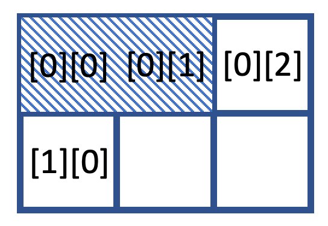
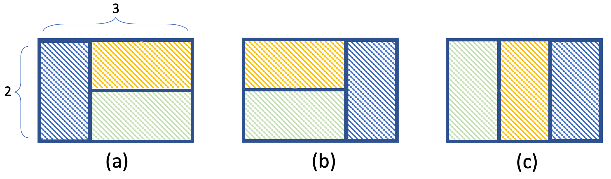
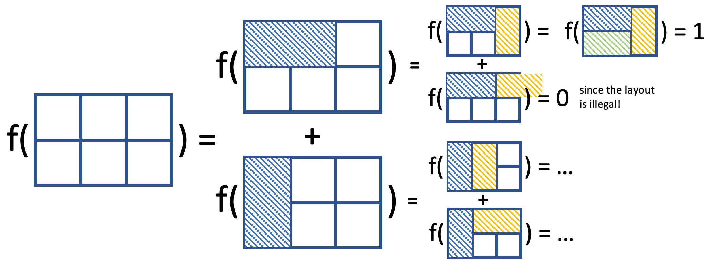

During the decoration stage, workers can use tiles to cover floors. The tiles are often of similar or repeated shapes. Before people start the work, they need to plan the layout first as it would be expensive to regret once they start using cement.
In this lab, we will solve tasks related to floor tiling using Recursion. Download the skeleton code to start the lab, and the demo (win & mac & linux) to verify the correctness.
Description
Suppose you've bought a batch of tiles in the shape of 1×2, and you are going to design the layout for a room in M×N grids (M, N ≤ 6).
Please notice: a) you are not allowed to cut the tiles; b) the tile can be laid vertically or horizontally; c) every grid in the room (array) needs to be covered.
Tasks:
Task 1: bool findUncoveredGrid(int board[][MAX_WIDTH], int height, int width, int& r_id, int& c_id);
The function returns a bool value to denote whether there exists uncovered grid or not. It will also use the pass-by-reference paramters r_id and c_id to store the row and column index of the "first" uncovered grid so that we can start or continue to lay tiles from this position.
The searching sequence is not unique, you may select the top and leftmost grid, or you may check the leftmost column and select the top uncovered grid. Both are acceptable as long as you implement it consistently.
Take the following case (with location [0][0] and [0][1] alreay covered by a tile) as an example, both [0][2] and [1][0] can be regarded as the first grid.

Task 2: int numberLayout(int board[][MAX_WIDTH], int height, int width);
The recursion function numberLayout() returns the number of possible layouts for the uncovered area of the input 2D array. Please make use of the helper function findUncoveredGrid() to find an uncovered grid to start with.
For a 2×3 array in the following figure (the colors have no meaning, just to differentiate tiles), the result should be 3. Layouts that are axisymmetric will be considered as different, for example, (a) and (b) are regarded as two layouts.

Hints:
Task 1: In this program, we assign 0 to uncovered grids, and other values like 1 to covered grids of the 2D array. You can find the first uncovered grid by using the loop, and store its row index and column index to the pass-by-reference parameters r_id and c_id.
Task 2: You can solve the complicated problem by recursion, which means decomposing the problem into smaller sub-questions and composing them. For this task, think about placing the first tile to the top leftmost grid [0][0] vertically or horizontally, then the problem is simplied to calculating the number of possible layouts of the two cases of rest uncovered space. During the recursion, the first uncovered grid will not be [0][0], that's why you need to use findUncoveredGrid() to find an uncovered grid and keep decomposing the problem.
When the function detects that there is no uncovered grids, it means you already finish one layout, so it will return 1.

Grading Scheme
Each lab carries 3 points in total.
By attending a lab, the student gets 1 point for attendance (but only if it is clear that the student does put in some effort).
By completing the lab exercise correctly and answering TAs' question (if there is a
question) correctly, the student gets the remaining 2 more points.
Please turn on your camera when demonstrating your work to the TA.
If the student is unable to finish the lab and demonstrate to the TA by the end of the lab, they can only get the attendance point.